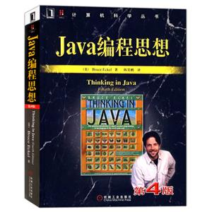

Java基础
1.String类为什么是final的。
答：final 修饰的类是不被能继承的，所以 final 修饰的类是不能被篡改的。
1、从设计安全)上讲，
1)、确保它们不会在子类中改变语义。String类是final类，这意味着不允许任何人定义String的子类。
换言之，
如果有一个String的引用，它引用的一定是一个String对象，而不可能是其他类的对象。
2)、String 一旦被创建是不能被修改的，
3)、不可变对象不能被写，所以线程安全
4)、不可变性支持字符串常量池，这样在大量使用字符串的情况下，可以节省内存空间，提高效率。
2．HashMap的源码，实现原理，底层结构。
答：HashMap的链表元素对应的是一个静态内部类Entry，Entry主要包含key，value，next三个元素
主要有put和get方法，put的原理是，通过hash%Entry.length计算index，此时记作Entry[index]=该元素。如果index相同，就是新入的元素放置到Entry[index]，原先的元素记作Entry[index].next，get就比较简单了，先遍历数组，再遍历链表元素。
null key总是放在Entry数组的第一个元素
解决hash冲突的方法：链地址法
再散列rehash的过程：确定容量超过目前哈希表的容量，重新调整table 的容量大小，当超过容量的最大值时，取Integer.Maxvalue
3．说说你知道的几个Java集合类：list、set、queue、map
答：
1.List 用于描述一个有序集合，关心的是索引，与其他集合相比，List特有的就是和索引相关的一些方法：get(int index) 、 add(int index,Object o) 、 indexOf(Object o) 。它有两种访问元素的协议：一种是用迭代器，另一种是用get和set方法随机地访问每个元素。后者不适用于链表，但对数组却很有用。
ArrayList 封装了一个动态再分配的Object[]数组，它提供快速迭代和快速随机访问的能力。
LinkedList 中的元素之间是双链接的，当需要快速插入和删除时LinkedList成为List中的不二选择。使用链表的唯一理由就是尽可能地减少在列表中间插入或删除元素所付出的代价。如果列表只有少数几个元素，完全可以使用ArrayList。避免使用以整数索引表示链表中位置的所有方法。如果需要对集合进行随机访问，就使用数组或ArrayList，而不要使用链表。它具有方法addFirst()、addLast()、getFirst()、getLast()、removeFirst()、removeLast()，这些方法(没有在任何接口或基类中定义过)使得LinkedList可以当作堆栈、队列和双向队列使用。
Vector 是ArrayList的线程安全版本，性能比ArrayList要低，现在已经很少使用
2、Set接口
Set关心唯一性，它不允许重复。set接口没有引入新方法，所以Set就是一个Collection，只不过其行为不同。
HashSet 当不希望集合中有重复值，并且不关心元素之间的顺序时可以使用此类。
LinkedHashset 当不希望集合中有重复值，并且希望按照元素的插入顺序进行迭代遍历时可采用此类。扩展HashSet，它提供了一个可以快速访问各个元素的有序集合。同时，它也增加了实现的代价，因为哈希表元中的各个元素是通过双重链接式列表链接在一起的。
TreeSet 当不希望集合中有重复值，并且希望按照元素的自然顺序进行排序时可以采用此类。将一个元素添加到TreeSet要比添加到HashSet中慢。TreeSet是SortedSet接口的唯一实现类，TreeSet可以确保集合元素处于排序状态。TreeSet支持两种排序方式，自然排序和定制排序，其中自然排序为默认的排序方式。向TreeSet中加入的应该是同一个类的对象。 TreeSet判断两个对象不相等的方式是两个对象通过equals方法返回false，或者通过CompareTo方法比较没有返回0 。
3、Map接口
Map关心的是唯一的标识符。他将唯一的键映射到某个元素。当然键和值都是对象。
HashMap 当需要键值对表示，又不关心顺序时可采用HashMap。为了优化HashMap空间的使用，您可以调优初始容量和负载因子。
Hashtable 注意Hashtable中的t是小写的，它是HashMap的线程安全版本，现在已经很少使用。
LinkedHashMap 当需要键值对，并且关心插入顺序时可采用它。扩展HashMap，以插入顺序将关键字/值对添加进链接哈希映像中。象LinkedHashSet一样，LinkedHashMap内部也采用双重链接式列表。
TreeMap 当需要键值对，并关心元素的自然排序时可采用它。TreeMap没有调优选项，因为该树总处于平衡状态。
WeakHashMap 是Map的一个特殊实现，它使用WeakReference(弱引用)来存放哈希表关键字。使用这种方式时，当映射的键在 WeakHashMap 的外部不再被引用时，垃圾收集器会将它回收，但它将把到达该对象的弱引用纳入一个队列。WeakHashMap的运行将定期检查该队列，以便找出新到达的弱应用。当一个弱引用到达该队列时，就表示关键字不再被任何人使用，并且它已经被收集起来。然后WeakHashMap便删除相关的映射。
IdentityHashMap 也是Map的一个特殊实现。在这个类中，关键字的哈希码不应该由hashCode()方法来计算，而应该由 System.identityHashCode方法进行计算(即使已经重新定义了hashCode方法)。这是Object.hashCode根据对象 的内存地址来计算哈希码时使用的方法。另外，为了对各个对象进行比较，IdentityHashMap将使用==，而不使用equals方法。
4、Queue接口
Queue用于保存将要执行的任务列表。
LinkedList 同样实现了Queue接口，可以实现先进先出的队列。
PriorityQueue 用来创建自然排序的优先级队列。
4. 描述一下ArrayList和LinkedList各自实现和区别
答：ArrayList和LinkedList的大致区别如下:
1.ArrayList是实现了基于动态数组的数据结构，LinkedList基于链表的数据结构。
2.对于随机访问get和set，ArrayList觉得优于LinkedList，因为LinkedList要移动指针。(aryylist尾部插入直接给数组末尾赋值，其他remove和insert都是复制数组
system.arrycopy方法)
1. 对于新增和删除操作add和remove，LinedList比较占优势，因为ArrayList要移动数据。
5. Java中的队列都有哪些，有什么区别
答：。Java提供的线程安全的Queue可以分为阻塞队列和非阻塞队列，其中阻塞队列的典型例子是BlockingQueue，非阻塞队列的典型例子是ConcurrentLinkedQueue，在实际应用中要根据实际需要选用阻塞队列或者非阻塞队列。
LinkedBlockingQueue
由于LinkedBlockingQueue实现是线程安全的，实现了先进先出等特性，是作为生产者消费者的首选，LinkedBlockingQueue 可以指定容量，也可以不指定，不指定的话，默认最大是Integer.MAX_VALUE，其中主要用到put和take方法，put方法在队列满的时候会阻塞直到有队列成员被消费，take方法在队列空的时候会阻塞，直到有队列成员被放进来。
ConcurrentLinkedQueue
ConcurrentLinkedQueue是Queue的一个安全实现．Queue中元素按FIFO原则进行排序．采用CAS操作，来保证元素的一致性。
LinkedBlockingQueue是一个线程安全的阻塞队列，它实现了BlockingQueue接口，BlockingQueue接口继承自java.util.Queue接口，并在这个接口的基础上增加了take和put方法，这两个方法正是队列操作的阻塞版本
6. 反射中，Class.forName和classloader的区别
java中class.forName()和classLoader都可用来对类进行加载。
class.forName()前者除了将类的.class文件加载到jvm中之外，还会对类进行解释，执行类中的static块。
而classLoader只干一件事情，就是将.class文件加载到jvm中，不会执行static中的内容,只有在newInstance才会去执行static块。
Class.forName(name, initialize, loader)带参函数也可控制是否加载static块。并且只有调用了newInstance()方法采用调用构造函数，创建类的对象
7.Java内存泄露的问题调查定位：jmap，jstack的使用等等
1.jps主要用来输出JVM中运行的进程状态信息。语法格式如下：
jps [options] [hostid]：
-q 不输出类名、Jar名和传入main方法的参数
-m 输出传入main方法的参数
-l 输出main类或Jar的全限名
-v 输出传入JVM的参数
2. jstack可以定位到线程堆栈，根据堆栈信息我们可以定位到具体代码，所以它在JVM性能调优中使用得非常多。下面我们来一个实例找出某个Java进程中最耗费CPU的Java线程并定位堆栈信息，用到的命令有ps、top、printf、jstack、grep。
(1) 第一步先找出Java进程ID：ps -ef |grep + 应用名
(2) 找出该进程内最耗费CPU的线程：top -Hppid ，TIME+最大的就是最耗cpu的
(3) 第二步看到id为21742的进程最耗时间，用printf"%x\n" 21742命令，得到21742的十六进制值为54ee，它用来输出进程21711的堆栈信息，然后根据线程ID的十六进制值，执行如下命令: jstack 21711 | grep 54ee
2. jmap用来查看堆内存使用状况，一般结合jhat使用。
8. string、stringbuilder、stringbuffer区别
答：
String 字符串常量
StringBuffer 字符串变量（线程安全）
StringBuilder 字符串变量（非线程安全）
简要的说， String 类型和 StringBuffer类型的主要性能区别其实在于 String 是不可变的对象, 因此在每次对 String 类型进行改变的时候其实都等同于生成了一个新的 String 对象，然后将指针指向新的 String 对象，所以经常改变内容的字符串最好不要用 String ，因为每次生成对象都会对系统性能产生影响，特别当内存中无引用对象多了以后， JVM 的 GC 就会开始工作，那速度是一定会相当慢的。
而如果是使用StringBuffer 类则结果就不一样了，每次结果都会对 StringBuffer 对象本身进行操作，而不是生成新的对象，再改变对象引用。所以在一般情况下我们推荐使用 StringBuffer ，特别是字符串对象经常改变的情况下。
java.lang.StringBuilder一个可变的字符序列是5.0新增的。此类提供一个与StringBuffer 兼容的 API，但不保证同步。该类被设计用作 StringBuffer 的一个简易替换，用在字符串缓冲区被单个线程使用的时候（这种情况很普遍）。如果可能，建议优先采用该类，因为在大多数实现中，它比 StringBuffer 要快。两者的方法基本相同。
参考用书:

内容来自:https://blog.csdn.net/qq_24635589/article/details/79443127